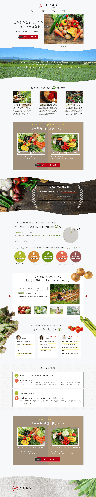
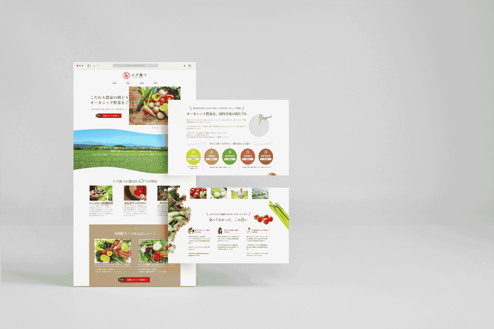

スグ食べ
Period : March 2022~ (2 weeks)
Role : Design / Image material
Skills : Photoshop / Illustrator / Adobe XD
I designed a fictitious LP site as an assignment at Digital Hollywood STUDIO.
The logo and text were prepared by the client, but the photos and buttons were all prepared and designed by myself.
制作期間：2022年3月～（2週間）
担当範囲：デザイン / 画像素材
使用技術：Photoshop / Illustrator / Adobe XD
デジタルハリウッドSTUDIOでの課題で架空LPサイトのデザインを行いました。
ロゴやテキストはクライアント側で用意されたものを利用していますが、写真やボタン等は全て自身で用意し、デザインしたものとなっております。
- 
Natural and bright, and can feel the freshness of the vegetables.
In order to meet the client's desire to "deliver fresh and delicious vegetables to people who are very particular about food," I created a design that gives a trustworthy and friendly impression. I created a button that makes you want to click it so that visitors to the site would want to order the "trial set".
ナチュラルで明るく、野菜の新鮮さを感じられるイメージ
クライアント様の「新鮮でおいしい野菜を、食へのこだわりが強い人々に届けたい」というご希望に添えるよう、信頼感があり親しみやすい印象のデザインにしました。サイトを見た人が「お試しセット」を注文してみたいと思えるよう、思わずクリックしたくなるようなボタンを作成しました。


- 
Intention/Point :
In order to make the LP site highly appealing, I arranged photos of fresh vegetables appropriately and devised ways to make important points stand out.
Problem/Solution :
In order to make it easier for people who view the site to order the "trial set", I placed impactful buttons several times and tried to guide them.
意図・ポイント :
訴訟力の高いLPサイトになるように、新鮮な野菜の写真を適度に配置したり、重要箇所を目立たせる工夫をしました。
問題と解決策 :
サイトを見た人が「お試しセット」を気軽に注文できるように、インパクトのあるボタンを数回配置し、誘導するよう心掛けました。